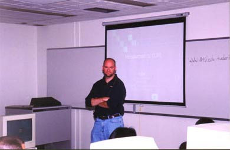
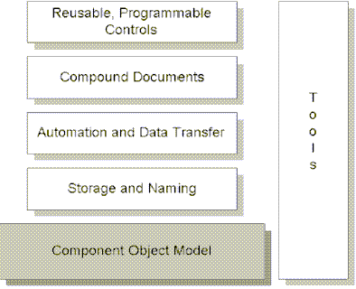

09/14/1999
More than 30 students and faculty members attended the second meeting of the
Club on September 14, 1999. The second meeting was dedicated to a discussion of
Microsoft's COM/DCOM technologies. Needles to say, it was quite natural that the
presentation on this topic was given by one of the best specialists in this
field - Mark Bramer from Microsoft.
Mark first presented the theoretical foundations of COM/DCOM technologies an
d answered questions from the audience. His presentation was followed by an
actual demonstration of COM principles: Mark created a working COM application
from scratch, proving that this technology is accessible to everybody who wants
to use it.
Brian Lawton - the president of the Club presented Mark with a UM-St. Louis
T-shirt and Mark promised to do his best in promoting our school at Microsoft .
The meeting concluded with a popular tradition: a giveaway of Microsoft
souvenirs and software.

So, what is COM and DCOM?
The Component Object Model (COM) is a component software architecture that
allows applications and systems to be built from components supplied by
different software vendors. COM is the underlying architecture that forms the
foundation for higher-level software services, like those provided by OLE. OLE
services span various aspects of component software, including compound
documents, custom controls, inter-application scripting, data transfer, and
other software interactions.
These services provide distinctly different functionality to the user;
however, they share a fundamental requirement for a mechanism that allows binary
software components, supplied by different software vendors, to connect to and
communicate with each other in a well-defined manner.

This mechanism is supplied by COM, a component software architecture that:
Defines a binary standard for component interoperability
Is programming language-independent
Is provided on multiple platforms (Microsoft\256 Windows\256, Microsoft Windows
NT™, Apple\256 Macintosh\256, UNIX\256)
Provides for robust evolution of component-based applications and systems
Is extensible
In addition, COM provides mechanisms for the following: Communications
between components, even across process and network boundaries
Shared memory management between components
Error and status reporting
Dynamic loading of components
It is important to note that COM is a general architecture for component
software. While Microsoft is applying COM to address specific areas such as
controls, compound documents, automation, data transfer, storage and naming, and
others, any developer can take advantage of the structure and foundation that
COM provides.
To learn more about COM and DCOM, link to Microsoft's website at
http://www.microsoft.com/com